Cumbuco
Startpunt & thuisbasis. Kitescholen, warm opstarten, eerste sessies bij Windtown.
9 — 18 OKTOBER 2026 · CEARÁ, BRAZILIË
In 2024 proefden we er al van. Dit keer pakken we de hele kust: vijf spots, non-stop thermische wind en dé klassieke downwinder van Ceará.
PROLOOG · BRAZIL 2024
Brazilië 2024: elke ochtend wakker worden met wind die er gewoon is. Sessies tot het donker werd, caipirinha's in het zand, spierpijn die je graag terugneemt. Dit zijn de beelden — en dit is precies waarom we teruggaan. Alleen dit keer verder, wilder en met z'n drieën.
Klik op een foto om 'm groot te bekijken. Onze eigen beelden — Donkey Lagoon, november 2024.
HET PLAN · OKTOBER 2026
Ceará is de meest betrouwbare kitecoast van Brazilië: van juli t/m december waait de thermische wind vrijwel elke dag 20–30 knopen, van vroeg in de ochtend tot laat in de middag. Met z'n drieën volgen we de kust van oost naar west — vijf spots, elk met een ander karakter: een thuisbasis om in te vliegen, rustige lagunes, een ongetij-spot voor flat water, de duinen van Jeri en de wildernis van Tatajuba als grand finale.
Dit voorstel bevat een dagplanning, twee complete accommodatie-opties (A — Kite Comfort en B — Backpacker Budget) en een budgetoverzicht. Alles binnen max. €50 pp per nacht. Cumbuco ligt vast: we zitten bij Windtown.
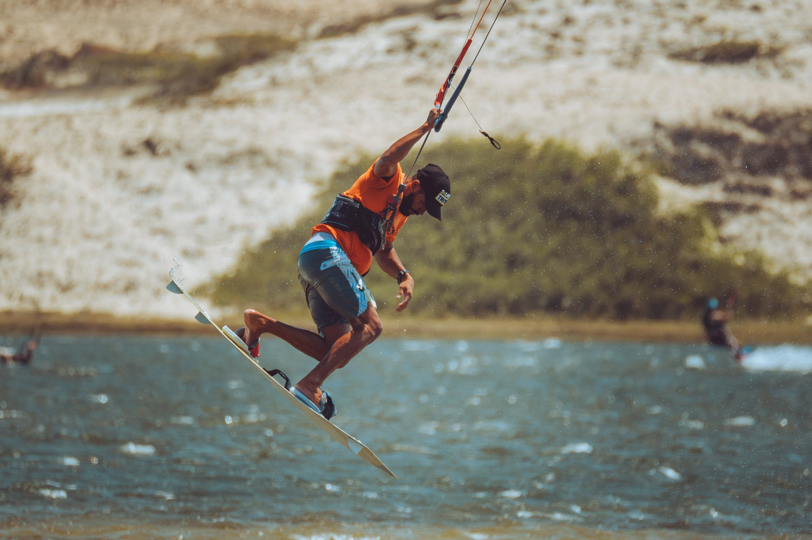
DE ROUTE · OOST → WEST
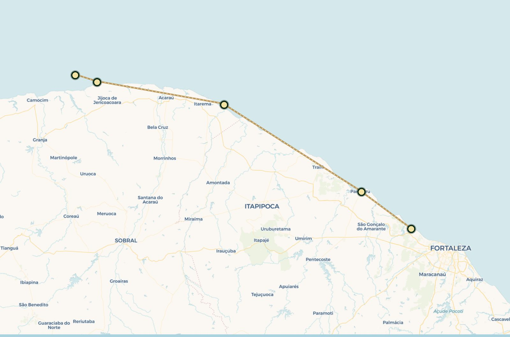
Startpunt & thuisbasis. Kitescholen, warm opstarten, eerste sessies bij Windtown.
Rustiger en lokaler. Brede lagune — en even verderop Donkey Lagoon, spiegelglad tussen de duinen.
Ongetij-spot — flat water, ongeacht het tij. Eén van de beste freestyle-lagunes van Brazilië.
De iconische duinen. Sunset op de Duna do Pôr do Sol, levendig dorp, veel restaurants.
Grand finale: wildste stuk kust, nauwelijks bebouwd, downwind vanaf Jeri over de lagune.
DAGPLANNING
Tatajuba is lastig bereikbaar over de weg (4x4/zandpad) — de gebruikelijke manier is downwind vanaf Jeri over de lagune. Wil de groep er een nacht blijven? Zie de optionele extra nacht bij Opties A/B hieronder.
ITINERARY · STEM MEE
We hebben 9 nachten. Twee smaken: lekker lang op één plek blijven hangen (Jeri Focus), of elke paar dagen door naar de volgende spot (de Grote Tour). Stem met z'n drieën — de telling blijft op je toestel bewaard, en je kunt 'm delen in de groepsapp.
7 vaste nachten · 2 flex-nachten (extra Jeri of Tatajuba)
9 nachten · elke etappe een nieuwe spot
Nog geen stem uitgebracht.
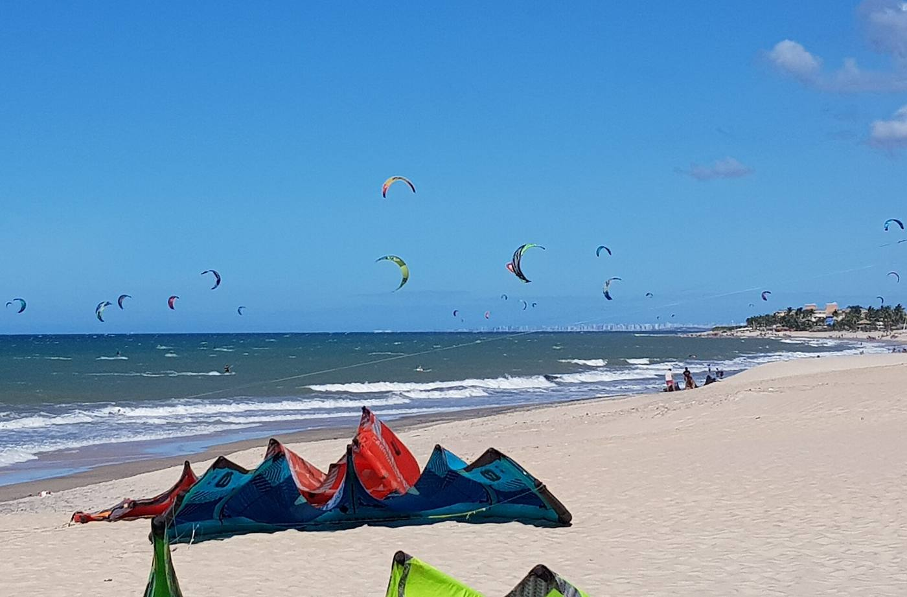
Onze thuisbasis. Grote zandduinen direct aan het strand, meerdere kitescholen, en de betrouwbaarste wind van de trip om in te vliegen. Overdag side-shore, ideale kracht voor 9–12m.
Accommodatie: Windtown (vast) →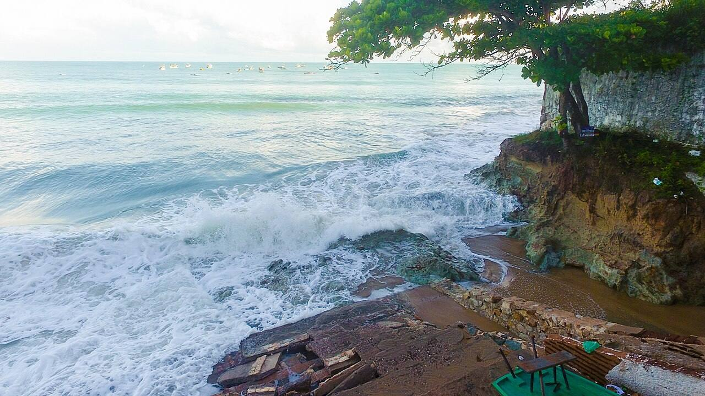
Kleinschaliger en lokaler dan Cumbuco. Brede lagune bij laag water, minder toeristen, goede prijs-kwaliteit. En het echte goud ligt 3 km voorbij Lagoinha: Donkey Lagoon — een getij-onafhankelijke, spiegelgladde freestyle-lagune tussen de duinen, met wilde ezels als publiek. Vanuit Paracuru zo te doen als dagtrip of als start van de lange downwind-etappe.
Accommodatie: zie opties A/B →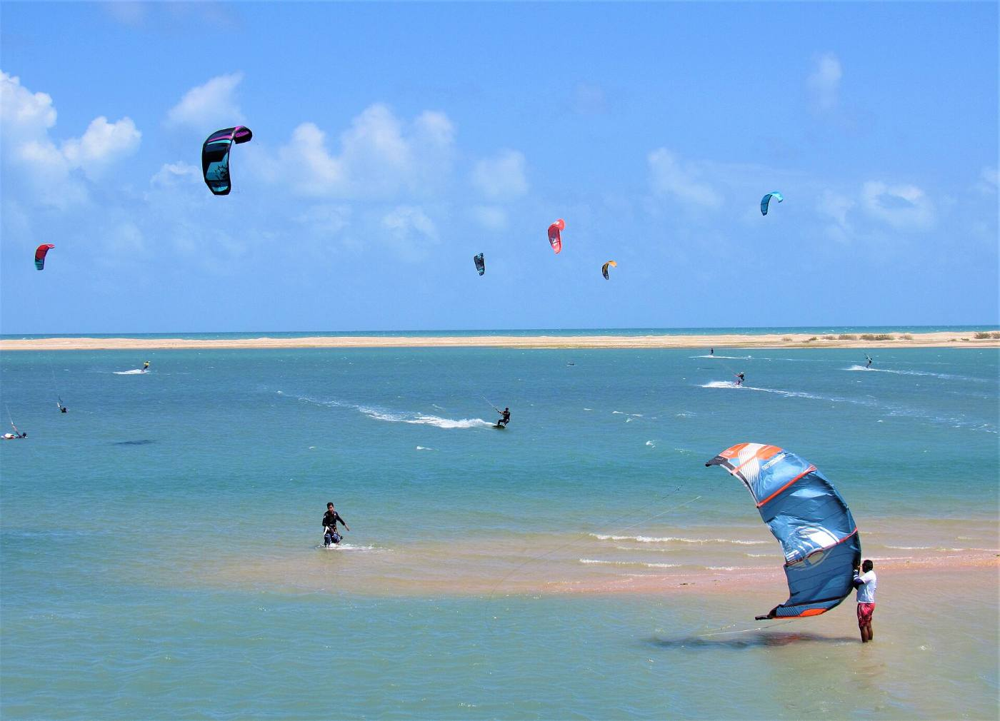
Één van Brazilië's beste ongetij-spots: de lagune blijft varen ongeacht eb of vloed. Vlak water, perfect voor freestyle en foilen. Afgelegen en rustig.
Accommodatie: zie opties A/B →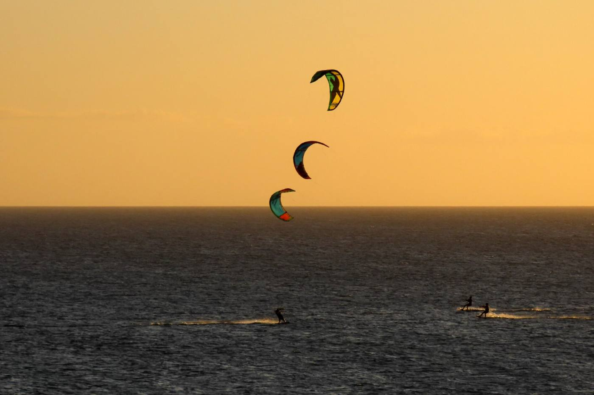
Het iconische duindorp. Kiten op de lagune van Jeri, zonsondergang vanaf de Duna do Pôr do Sol, en 's avonds het levendigste dorp van de reis — restaurants, bars, capoeira op straat.
Accommodatie: zie opties A/B →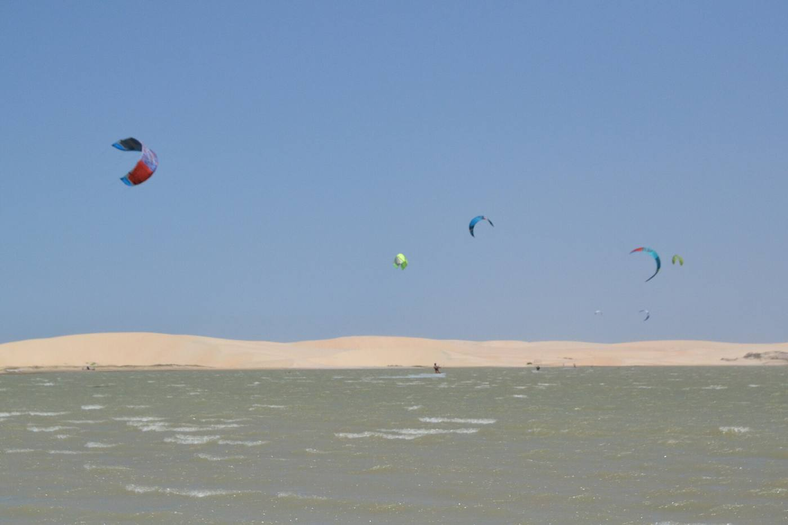
De grand finale. Downwind vanaf Jeri over de lagune, langs verlaten duinen — nauwelijks bebouwing, wind praktisch gegarandeerd van juli t/m december. Het wildste stuk van de trip.
Accommodatie: optionele extra nacht, zie opties A/B →DE DOWNWINDER
Onze route is niet toevallig — het is dé klassieke downwind-lijn van Ceará. De wind staat er van juli t/m januari vrijwel altijd schuin op het strand, dus je vaart lange etappes van 40 tot 70 km met de wind mee, terwijl een buggy of 4x4 de tassen vooruit rijdt. Elke etappe kan óók gewoon als los dagje bij de spot — we beslissen per dag op basis van wind en zin.
Meteen een serieuze: langs de Cauípe- en Taíba-lagune (snackstop), aankomen in de golven van Paracuru.
±45 km · 3–4 uurDé koningsetappe: via Lagoinha naar Donkey Lagoon voor een freestyle-stop tussen de duinen, dan door naar de ongetij-lagune van Guajiru.
±70 km · 4,5–5,5 uurLangs kliffen en zandbanken via het vissersdorp Icaraizinho, uitvarend richting Preá.
±60 km · 4–5 uurDe favoriet van iedereen: onder de duin van Jeri door, spiegelglad water bij Guriú, eindigen in de wildernis van Tatajuba.
±40 km · 3–4 uurEerlijk is eerlijk: etappes van 40–70 km zijn geen beginnersfeest — vlot relaunchen, varen in golven en 4+ uur op het water is de norm. Daarom rijdt de 4x4 áltijd mee: wie stukgaat stapt in, wie vliegt vaart door. Totaal over de trip: ±215 km downwind.
ACCOMMODATIES
Cumbuco ligt vast (Windtown) in beide opties. Voor de overige stops hebben we per optie een passende accommodatie uitgezocht, allemaal binnen budget. Klik op een kaart voor foto's, prijsindicatie en een link naar de aanbieder.
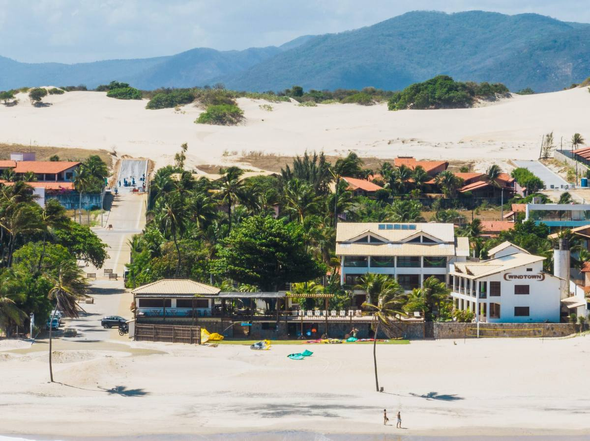
vastKitehuis met eigen school, zwembad, 2 min van de kite-spot.
± €38 pp / nachtSuites met ontbijt inbegrepen, dicht bij de lagune.
± €25 pp / nacht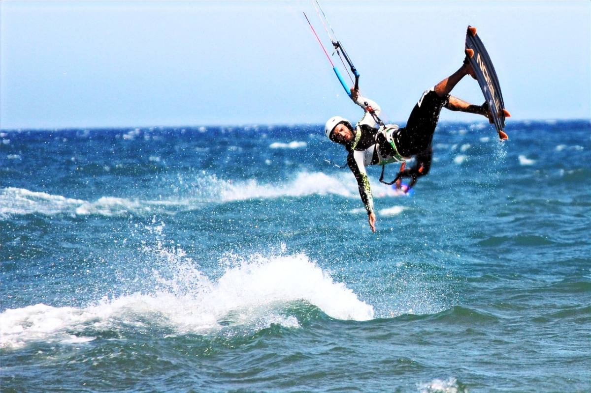
5 meter van zee, direct op de ongetij-spot, uitstekend ontbijt.
± €42 pp / nacht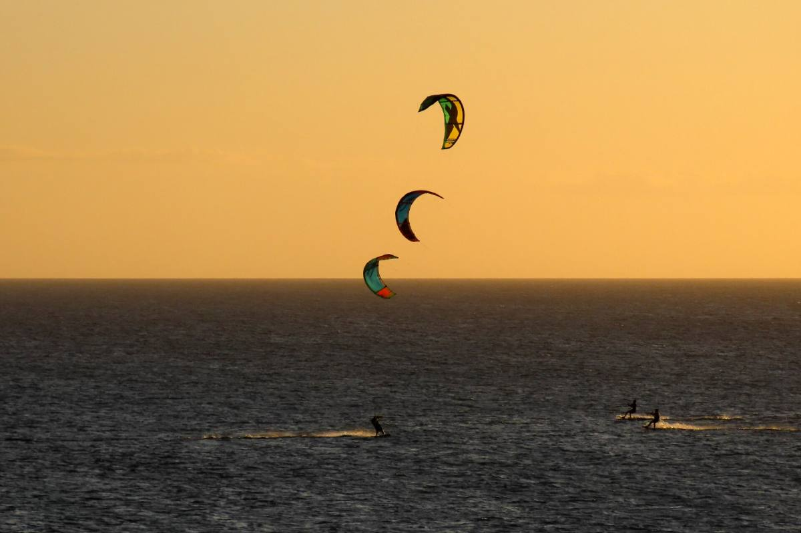
Eigen badkamer + balkon, 400 m van het strand, ontbijt inbegrepen.
± €35 pp / nacht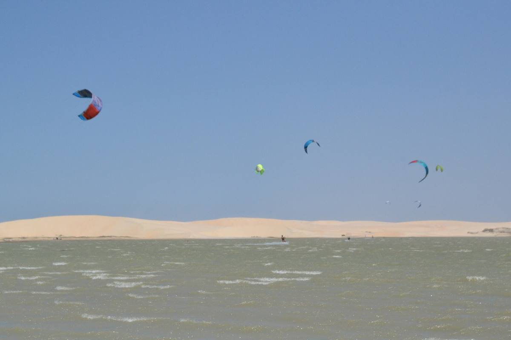
optioneel +1 nachtBungalows direct op het strand, airco, klamboe, hangmat.
± €40 pp / nachtKitehuis met eigen school, zwembad, 2 min van de kite-spot.
± €38 pp / nacht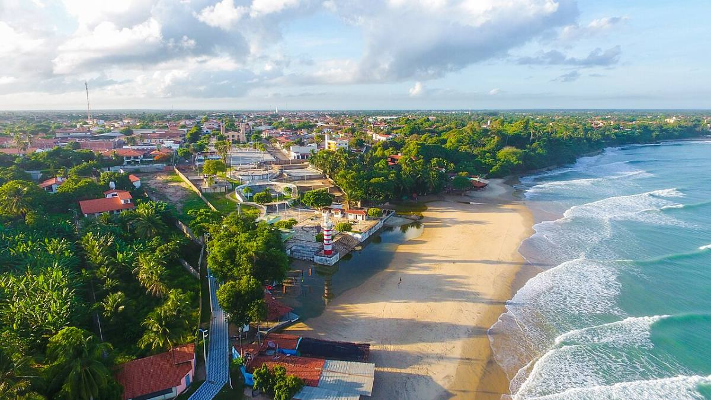
Simpele, goedkope pousada. Scooterverhuur op locatie.
± €16 pp / nacht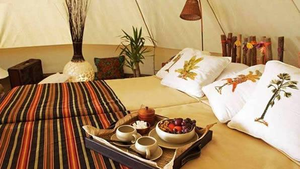
Eco-pousada met Sahara-tenten, zonne-/windenergie. Bijzonder & budgetvriendelijk.
± €26 pp / nacht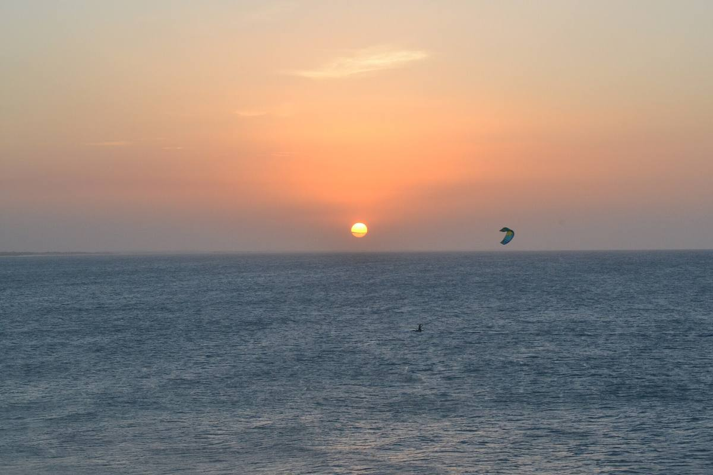
Zelfde pousada, eenvoudigere kamer. 400 m van het strand.
± €18 pp / nacht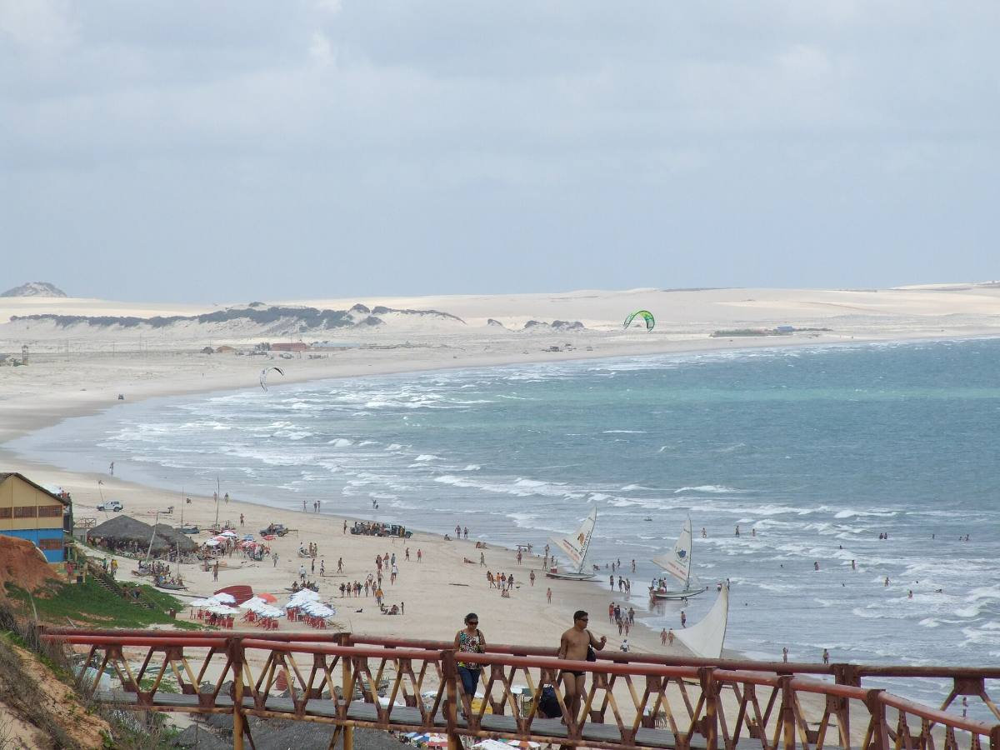
optioneel +1 nacht8 min lopen van het strand, tuin met zonnedek. Budgetvriendelijk.
± €20 pp / nachtElke knop opent de actuele beschikbaarheid met onze data al ingevuld: 3 personen, 1 kamer, gefilterd tot ±€150 per nacht totaal (≈ €50 pp) en gesorteerd op prijs. Hostels tellen gewoon mee.
BUDGET
| Cumbuco | 3 n × €38 | €114 |
| Paracuru | 2 n × €25 | €50 |
| Ilha do Guajiru | 2 n × €42 | €84 |
| Jericoacoara | 2 n × €35 | €70 |
| Totaal (9 n) | ≈ €35 / nacht | €318 |
| + Tatajuba (optioneel) | 1 n × €40 | €40 |
| Cumbuco | 3 n × €38 | €114 |
| Paracuru | 2 n × €16 | €32 |
| Ilha do Guajiru | 2 n × €26 | €52 |
| Jericoacoara | 2 n × €18 | €36 |
| Totaal (9 n) | ≈ €26 / nacht | €234 |
| + Tatajuba (optioneel) | 1 n × €20 | €20 |
Prijzen zijn indicaties op basis van recent gepubliceerde tarieven (deelbaar met 3 personen per kamer/room) en kunnen wijzigen met seizoen en beschikbaarheid. Bevestig altijd de actuele prijs bij de aanbieder vóórdat we boeken. Excl. vluchten, transfers, eten en verzekering.
VLUCHTSCHEMA
Er vliegt momenteel niets rechtstreeks van Amsterdam naar Fortaleza — één overstap is de norm. Dit zijn de drie logische routes; prijzen zijn indicaties voor oktober (retour, excl. sportbagage) en veranderen dagelijks.
AMS → Lissabon → Fortaleza
AMS → Parijs CDG → Fortaleza
AMS → Madrid → Fortaleza
Tip: boardbag inchecken als sportbagage kost bij TAP/AF-KLM ±€75–150 per richting — samen één quiver delen scheelt flink.
DUS…
Tien dagen wind, drie boards, één busje met tassen en elke avond een ander dorp. Dit is 'm — de trip waar we het in 2024 al over hadden. Zo maken we 'm definitief: